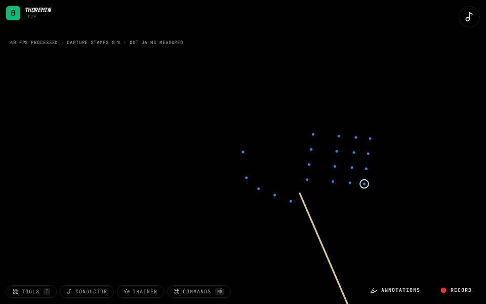

Air Drum

What to do
- Hold a hand like you hold a drumstick and strike downward.
- Strike once or twice to teach it where your plane is.
- Right hand plays the kick, left hand the snare; add pads to give places on screen their own drums.
Strike at nothing and the drum sounds, on time.
How it works
A stick tip is estimated from the way you hold your hand. The hit is predicted from how the stroke approaches, so it sounds when you meant it instead of a camera frame late. With no pads, each hand plays its own drum (right: kick, left: snare). Pads are places on the video: a stroke that lands on one plays that pad's sound. How fast the stroke was chooses how loud. Pads can be stacked and moved.
Settings
Air drum in the editor has the pad editor, the stick point, each hand's drum sound, how fast a stroke must be to sound at full volume, the lead, and a pattern trainer that drills short drum patterns. Pad layouts can be saved.
Its settings: Air drum, Sound. Every knob: the manual.